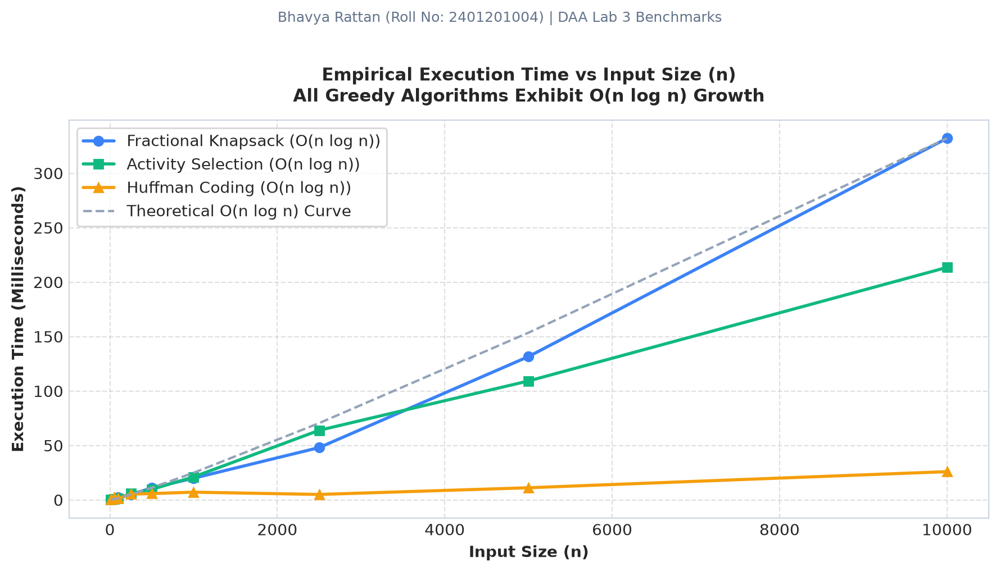

K.R. Mangalam University | Performance Profiler
Benchmarking & Profiling Engine
Empirical Latency & Memory Measurements for Greedy Optimization Algorithms
Student: Bhavya Rattan
Roll No: 2401201004
Faculty: Dr. Aarti | CO3
Knapsack Time (n=10k)
0.332 s
O(n log n) ratio-sort bound
Activity Time (n=10k)
0.213 s
Earliest finish sorting
Huffman Time (n=10k)
0.026 s
Min-heap tree building
Peak Memory (n=10k)
2.26 MB
Strict O(n) linear auxiliary space
📊 Empirical Results Table (`benchmark_results.csv`)
Recorded using Python time.perf_counter() (high-resolution wall clock) and tracemalloc (heap allocator profiling).
| Input Size (n) | Knapsack (s) | Knapsack (KB) | Activity (s) | Activity (KB) | Huffman (s) | Huffman (KB) |
|---|---|---|---|---|---|---|
| n = 10 | 0.00020 s | 2.75 KB | 0.00014 s | 2.48 KB | 0.00045 s | 2.92 KB |
| n = 50 | 0.00057 s | 7.41 KB | 0.00103 s | 10.68 KB | 0.00227 s | 8.00 KB |
| n = 100 | 0.00237 s | 14.35 KB | 0.00131 s | 20.27 KB | 0.00128 s | 10.97 KB |
| n = 250 | 0.00496 s | 41.91 KB | 0.00593 s | 54.14 KB | 0.00528 s | 19.46 KB |
| n = 500 | 0.01096 s | 82.68 KB | 0.00967 s | 110.04 KB | 0.00582 s | 23.88 KB |
| n = 1,000 | 0.01991 s | 166.93 KB | 0.02113 s | 223.14 KB | 0.00711 s | 31.75 KB |
| n = 2,500 | 0.04805 s | 431.63 KB | 0.06391 s | 564.02 KB | 0.00502 s | 50.90 KB |
| n = 5,000 | 0.13160 s | 836.10 KB | 0.10921 s | 1,126.13 KB | 0.01116 s | 84.16 KB |
| n = 10,000 | 0.33203 s | 1,923.63 KB | 0.21348 s | 2,261.45 KB | 0.02595 s | 151.36 KB |
📈 Empirical vs Theoretical Growth Curves

Empirical Runtime vs Theoretical O(n log n) Curve

Linear Auxiliary Memory Growth O(n) Footprint